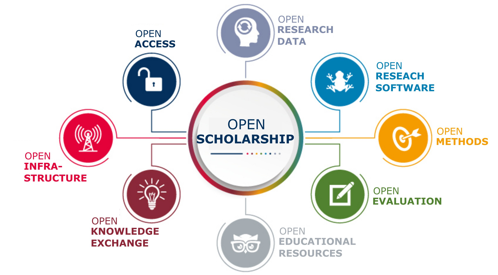
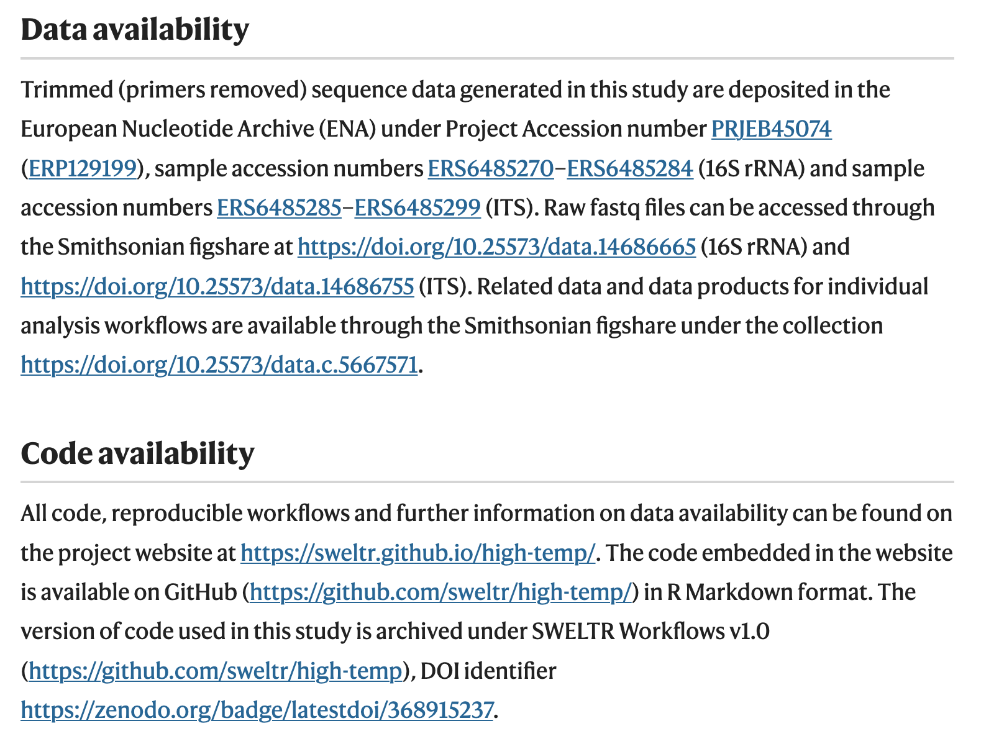
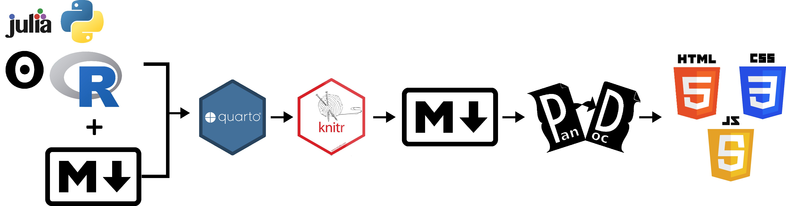
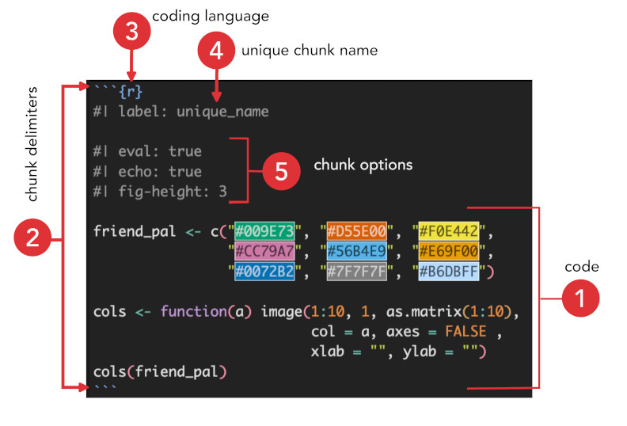

Main principles

R, Markdown, & Quarto
Rationale and Definition
More than 70% of researchers have tried and failed to reproduce another scientist’s experiments, and more than half have failed to reproduce their own experiments. Those are some of the telling figures that emerged from Nature’s survey of 1,576 researchers who took a brief online questionnaire on reproducibility in research. (Baker 2016)1
According to this article in Science Translational Medicine, reproducibility …
… [is a] set of procedures that permit the reader of a paper to see the entire processing trail from the raw data and code to figures and tables. (Goodman et al. 2016)
Or the U.S. National Science Foundation (NSF) defines it this way …
… refers to the ability of a researcher to duplicate the results of a prior study using the same materials as were used by the original investigator. (Cacioppo et al. 2015)

Publication: Microbial diversity declines in warmed tropical soil and respiration rise exceed predictions as communities adapt
Workflow: SWELTR created in the Quarto framework.
Publication: Rapid ecosystem-scale consequences of acute deoxygenation on a Caribbean reef.
Workflow: Hypocolypse created using Distll.
Publication: Intestinal microbes as an axis of functional diversity among large marine consumers.
Workflow: ProjectDIGEST created using native R Markdown.
All source code hosted on GitHub and freely available.

The Istmobiome Project Project site created with blogdown and Hugo.
Cacao Fermentation Presentation created using reveal.js.
How the Isthmus of Panama changed the world Presentation created with the xaringan package.
R Markdown Fieldguide R Markdown tutorial website for the 2022 STRI-McGill NEO field course. Made with the Distill blog template.
Interactive fish phylogeny Workflow on database scraping and visualization.
All source code hosted on GitHub and freely available.
An open-source scientific and technical publishing system

.qmd) contains code and Markdown formatted text.knitr executes all the R code, knits the results together with Markdown text, and creates a new Markdown document.Markdown is a “lightweight markup language with plain-text-formatting syntax.”
What this means is that Markdown is easy-to-write using any generic text editor and easy-to-read in its raw form.
Here are a few resources I recommend to augment your skill development.
Markdown editors are a great tool to learn Markdown because you can see a live preview of what the rendered text will look like.
Online editors are universally supported across operating systems. Here are a few to get you started.
I only listing free desktop editors here. There are plenty more if you are willing to pony up some cash. Some of these are operating system specific while others are universal.

Goal is to ensure your files are Machine and Human readable.
This applies to:
Kebab case: Words delimited by a hyphen (-)1.
file-one
directory-twoSnake case: Words delimited by an underscore (_).
file_one
variable_twoPascal case: Words delimited by capital letters.
FileOne
VariableTwoCamel case: Words delimited by capital letters, except the initial word.
fileOne
variableTwoNever use special characters in your naming scheme.
(e.g., * # : \ / < > | " ? [ ] ; , = + & £ $ , and so on).
Many symbols are prohibited and a lot of software will reject these symbols.
Letters, numbers, dashes, underscores only.
\[ \begin{cases} \dot{x} = \sigma(y-x) \\ \dot{y} = \rho x - y - xz \\ \dot{z} = -\beta z + xy \end{cases} \] \[\begin{gather*} e^{i\pi} + 1 = 0 \end{gather*}\]
\[\begin{align} f(k) = {n \choose k} p^{k} (1-p)^{n-k} \end{align}\]